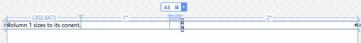

Responsive layouts with XAML
The XAML layout system provides automatic sizing of elements, layout panels, and visual states to help you create a responsive UI. With a responsive layout, you can make your app look great on screens with different app window sizes, resolutions, pixel densities, and orientations. You can also use XAML to reposition, resize, reflow, show/hide, replace, or re-architect your app's UI, as discussed in Responsive design techniques. Here, we discuss how to implement responsive layouts with XAML.
Fluid layouts with properties and panels
The foundation of a responsive layout is the appropriate use of XAML layout properties and panels to reposition, resize, and reflow content in a fluid manner.
The XAML layout system supports both static and fluid layouts. In a static layout, you give controls explicit pixel sizes and positions. When the user changes the resolution or orientation of their device, the UI doesn't change. Static layouts can become clipped across different form factors and display sizes. On the other hand, fluid layouts shrink, grow, and reflow to respond to the visual space available on a device.
In practice, you use a combination of static and fluid elements to create your UI. You still use static elements and values in some places, but make sure that the overall UI is responsive to different resolutions, screen sizes, and views.
Here, we discuss how to use XAML properties and layout panels to create a fluid layout.
Layout properties
Layout properties control the size and position of an element. To create a fluid layout, use automatic or proportional sizing for elements, and allow layout panels to position their children as needed.
Here are some common layout properties and how to use them to create fluid layouts.
Height and Width
The Height and Width properties specify the size of an element. You can use fixed values measured in effective pixels, or you can use auto or proportional sizing.
Auto sizing resizes UI elements to fit their content or parent container. You can also use auto sizing with the rows and columns of a grid. To use auto sizing, set the Height and/or Width of UI elements to Auto.
Note
Whether an element resizes to its content or its container depends on how the parent container handles sizing of its children. For more info, see Layout panels later in this article.
Proportional sizing, also called star sizing, distributes available space among the rows and columns of a grid by weighted proportions. In XAML, star values are expressed as * (or n* for weighted star sizing). For example, to specify that one column is 5 times wider than the second column in a 2-column layout, use "5*" and "*" for the Width properties in the ColumnDefinition elements.
This example combines fixed, auto, and proportional sizing in a Grid with 4 columns.
| Column | Sizing | Description |
|---|---|---|
| Column_1 | Auto | The column will size to fit its content. |
| Column_2 | * | After the Auto columns are calculated, the column gets part of the remaining width. Column_2 will be one-half as wide as Column_4. |
| Column_3 | 44 | The column will be 44 pixels wide. |
| Column_4 | 2* | After the Auto columns are calculated, the column gets part of the remaining width. Column_4 will be twice as wide as Column_2. |
The default column width is "*", so you don't need to explicitly set this value for the second column.
<Grid>
<Grid.ColumnDefinitions>
<ColumnDefinition Width="Auto"/>
<ColumnDefinition/>
<ColumnDefinition Width="44"/>
<ColumnDefinition Width="2*"/>
</Grid.ColumnDefinitions>
<TextBlock Text="Column 1 sizes to its content." FontSize="24"/>
</Grid>
In the Visual Studio XAML designer, the result looks like this.

To get the size of an element at runtime, use the read-only ActualHeight and ActualWidth properties instead of Height and Width.
Size constraints
When you use auto sizing in your UI, you might still need to place constraints on the size of an element. You can set the MinWidth/MaxWidth and MinHeight/MaxHeight properties to specify values that constrain the size of an element while allowing fluid resizing.
In a Grid, MinWidth/MaxWidth can also be used with column definitions, and MinHeight/MaxHeight can be used with row definitions.
Alignment
Use the HorizontalAlignment and VerticalAlignment properties to specify how an element should be positioned within its parent container.
- The values for HorizontalAlignment are Left, Center, Right, and Stretch.
- The values for VerticalAlignment are Top, Center, Bottom, and Stretch.
With the Stretch alignment, elements fill all the space they're provided in the parent container. Stretch is the default for both alignment properties. However, some controls, like Button, override this value in their default style. Any element that can have child elements can treat the Stretch value for HorizontalAlignment and VerticalAlignment properties uniquely. For example, an element using the default Stretch values placed in a Grid stretches to fill the cell that contains it. The same element placed in a Canvas sizes to its content. For more info about how each panel handles the Stretch value, see the Layout panels article.
For more info, see the Alignment, margin, and padding article, and the HorizontalAlignment and VerticalAlignment reference pages.
Visibility
You can reveal or hide an element by setting its Visibility property to one of the Visibility enumeration values: Visible or Collapsed. When an element is Collapsed, it doesn't take up any space in the UI layout.
You can change an element's Visibility property in code or in a visual state. When the Visibility of an element is changed, all of its child elements are also changed. You can replace sections of your UI by revealing one panel while collapsing another.
Tip
When you have elements in your UI that are Collapsed by default, the objects are still created at startup, even though they aren't visible. You can defer loading these elements until they are shown by using the x:Load attribute to delay the creation of the objects. This can improve startup performance. For more info, see x:Load attribute.
Style resources
You don't have to set each property value individually on a control. It's typically more efficient to group property values into a Style resource and apply the Style to a control. This is especially true when you need to apply the same property values to many controls. For more info about using styles, see Styling controls.
Layout panels
To position visual objects, you must put them in a panel or other container object. The XAML framework provides various panel classes, such as Canvas, Grid, RelativePanel and StackPanel, which serve as containers and enable you to position and arrange the UI elements within them.
The main thing to consider when choosing a layout panel is how the panel positions and sizes its child elements. You might also need to consider how overlapping child elements are layered on top of each other.
Here's a comparison of the main features of the panel controls provided in the XAML framework.
| Panel Control | Description |
|---|---|
| Canvas | Canvas doesn't support fluid UI; you control all aspects of positioning and sizing child elements. You typically use it for special cases like creating graphics or to define small static areas of a larger adaptive UI. You can use code or visual states to reposition elements at runtime. |
| Grid | Grid supports fluid resizing of child elements. You can use code or visual states to reposition and reflow elements. |
| RelativePanel | |
| StackPanel | |
| VariableSizedWrapGrid |
For detailed information and examples of these panels, see Layout panels.
Layout panels let you organize your UI into logical groups of controls. When you use them with appropriate property settings, you get some support for automatic resizing, repositioning, and reflowing of UI elements. However, most UI layouts need further modification when there are significant changes to the window size. For this, you can use visual states.
Adaptive layouts with visual states and state triggers
Use visual states to make significant alterations to your UI based on window size or other changes.
When your app window grows or shrinks beyond a certain amount, you might want to alter layout properties to reposition, resize, reflow, reveal, or replace sections of your UI. You can define different visual states for your UI, and apply them when the window width or window height crosses a specified threshold.
A VisualState defines property values that are applied to an element when it's in a particular state. You group visual states in a VisualStateManager that applies the appropriate VisualState when the specified conditions are met. An AdaptiveTrigger provides an easy way to set the threshold (also called 'breakpoint') where a state is applied in XAML. Or, you can call the VisualStateManager.GoToState method in your code to apply the visual state. Examples of both ways are shown in the next sections.
Set visual states in code
To apply a visual state from code, you call the VisualStateManager.GoToState method. For example, to apply a state when the app window is a particular size, handle the SizeChanged event and call GoToState to apply the appropriate state.
Here, a VisualStateGroup contains two VisualState definitions. The first, DefaultState, is empty. When it's applied, the values defined in the XAML page are applied. The second, WideState, changes the DisplayMode property of the SplitView to Inline and opens the pane. This state is applied in the SizeChanged event handler if the window width is greater than 640 effective pixels.
Note
Windows doesn't provide a way for your app to detect the specific device your app is running on. It can tell you the device family (desktop, etc) the app is running on, the effective resolution, and the amount of screen space available to the app (the size of the app's window). We recommend defining visual states for screen sizes and break points.
<Page ...
SizeChanged="CurrentWindow_SizeChanged">
<Grid>
<VisualStateManager.VisualStateGroups>
<VisualStateGroup>
<VisualState x:Name="DefaultState">
<Storyboard>
</Storyboard>
</VisualState>
<VisualState x:Name="WideState">
<Storyboard>
<ObjectAnimationUsingKeyFrames
Storyboard.TargetProperty="SplitView.DisplayMode"
Storyboard.TargetName="mySplitView">
<DiscreteObjectKeyFrame KeyTime="0">
<DiscreteObjectKeyFrame.Value>
<SplitViewDisplayMode>Inline</SplitViewDisplayMode>
</DiscreteObjectKeyFrame.Value>
</DiscreteObjectKeyFrame>
</ObjectAnimationUsingKeyFrames>
<ObjectAnimationUsingKeyFrames
Storyboard.TargetProperty="SplitView.IsPaneOpen"
Storyboard.TargetName="mySplitView">
<DiscreteObjectKeyFrame KeyTime="0" Value="True"/>
</ObjectAnimationUsingKeyFrames>
</Storyboard>
</VisualState>
</VisualStateGroup>
</VisualStateManager.VisualStateGroups>
<SplitView x:Name="mySplitView" DisplayMode="CompactInline"
IsPaneOpen="False" CompactPaneLength="20">
<!-- SplitView content -->
<SplitView.Pane>
<!-- Pane content -->
</SplitView.Pane>
</SplitView>
</Grid>
</Page>
private void CurrentWindow_SizeChanged(object sender, Windows.UI.Core.WindowSizeChangedEventArgs e)
{
if (e.Size.Width > 640)
VisualStateManager.GoToState(this, "WideState", false);
else
VisualStateManager.GoToState(this, "DefaultState", false);
}
// YourPage.h
void CurrentWindow_SizeChanged(winrt::Windows::Foundation::IInspectable const& sender, winrt::Windows::UI::Xaml::SizeChangedEventArgs const& e);
// YourPage.cpp
void YourPage::CurrentWindow_SizeChanged(IInspectable const& sender, SizeChangedEventArgs const& e)
{
if (e.NewSize.Width > 640)
VisualStateManager::GoToState(*this, "WideState", false);
else
VisualStateManager::GoToState(*this, "DefaultState", false);
}
Set visual states in XAML markup
Prior to Windows 10, VisualState definitions required Storyboard objects for property changes, and you had to call GoToState in code to apply the state. This is shown in the previous example. You will still see many examples that use this syntax, or you might have existing code that uses it.
Starting in Windows 10, you can use the simplified Setter syntax shown here, and you can use a StateTrigger in your XAML markup to apply the state. You use state triggers to create simple rules that automatically trigger visual state changes in response to an app event.
This example does the same thing as the previous example, but uses the simplified Setter syntax instead of a Storyboard to define property changes. And instead of calling GoToState, it uses the built in AdaptiveTrigger state trigger to apply the state. When you use state triggers, you don't need to define an empty DefaultState. The default settings are reapplied automatically when the conditions of the state trigger are no longer met.
<Page ...>
<Grid>
<VisualStateManager.VisualStateGroups>
<VisualStateGroup>
<VisualState>
<VisualState.StateTriggers>
<!-- VisualState to be triggered when the
window width is >=640 effective pixels. -->
<AdaptiveTrigger MinWindowWidth="640" />
</VisualState.StateTriggers>
<VisualState.Setters>
<Setter Target="mySplitView.DisplayMode" Value="Inline"/>
<Setter Target="mySplitView.IsPaneOpen" Value="True"/>
</VisualState.Setters>
</VisualState>
</VisualStateGroup>
</VisualStateManager.VisualStateGroups>
<SplitView x:Name="mySplitView" DisplayMode="CompactInline"
IsPaneOpen="False" CompactPaneLength="20">
<!-- SplitView content -->
<SplitView.Pane>
<!-- Pane content -->
</SplitView.Pane>
</SplitView>
</Grid>
</Page>
Important
In the previous example, the VisualStateManager.VisualStateGroups attached property is set on the Grid element. When you use StateTriggers, always ensure that VisualStateGroups is attached to the first child of the root in order for the triggers to take effect automatically. (Here, Grid is the first child of the root Page element.)
Attached property syntax
In a VisualState, you typically set a value for a control property, or for one of the attached properties of the panel that contains the control. When you set an attached property, use parentheses around the attached property name.
This example shows how to set the RelativePanel.AlignHorizontalCenterWithPanel attached property on a TextBox named myTextBox. The first XAML uses ObjectAnimationUsingKeyFrames syntax and the second uses Setter syntax.
<!-- Set an attached property using ObjectAnimationUsingKeyFrames. -->
<ObjectAnimationUsingKeyFrames
Storyboard.TargetProperty="(RelativePanel.AlignHorizontalCenterWithPanel)"
Storyboard.TargetName="myTextBox">
<DiscreteObjectKeyFrame KeyTime="0" Value="True"/>
</ObjectAnimationUsingKeyFrames>
<!-- Set an attached property using Setter. -->
<Setter Target="myTextBox.(RelativePanel.AlignHorizontalCenterWithPanel)" Value="True"/>
Custom state triggers
You can extend the StateTrigger class to create custom triggers for a wide range of scenarios. For example, you can create a StateTrigger to trigger different states based on input type, then increase the margins around a control when the input type is touch. Or create a StateTrigger to apply different states based on the device family the app is run on. For examples of how to build custom triggers and use them to create optimized UI experiences from within a single XAML view, see the State triggers sample.
Visual states and styles
You can use Style resources in visual states to apply a set of property changes to multiple controls. For more info about using styles, see Styling controls.
In this simplified XAML from the State triggers sample, a Style resource is applied to a Button to adjust the size and margins for mouse or touch input. For the complete code and the definition of the custom state trigger, see the State triggers sample.
<Page ... >
<Page.Resources>
<!-- Styles to be used for mouse vs. touch/pen hit targets -->
<Style x:Key="MouseStyle" TargetType="Rectangle">
<Setter Property="Margin" Value="5" />
<Setter Property="Height" Value="20" />
<Setter Property="Width" Value="20" />
</Style>
<Style x:Key="TouchPenStyle" TargetType="Rectangle">
<Setter Property="Margin" Value="15" />
<Setter Property="Height" Value="40" />
<Setter Property="Width" Value="40" />
</Style>
</Page.Resources>
<RelativePanel>
<!-- ... -->
<Button Content="Color Palette Button" x:Name="MenuButton">
<Button.Flyout>
<Flyout Placement="Bottom">
<RelativePanel>
<Rectangle Name="BlueRect" Fill="Blue"/>
<Rectangle Name="GreenRect" Fill="Green" RelativePanel.RightOf="BlueRect" />
<!-- ... -->
</RelativePanel>
</Flyout>
</Button.Flyout>
</Button>
<!-- ... -->
</RelativePanel>
<VisualStateManager.VisualStateGroups>
<VisualStateGroup x:Name="InputTypeStates">
<!-- Second set of VisualStates for building responsive UI optimized for input type.
Take a look at InputTypeTrigger.cs class in CustomTriggers folder to see how this is implemented. -->
<VisualState>
<VisualState.StateTriggers>
<!-- This trigger indicates that this VisualState is to be applied when MenuButton is invoked using a mouse. -->
<triggers:InputTypeTrigger TargetElement="{x:Bind MenuButton}" PointerType="Mouse" />
</VisualState.StateTriggers>
<VisualState.Setters>
<Setter Target="BlueRect.Style" Value="{StaticResource MouseStyle}" />
<Setter Target="GreenRect.Style" Value="{StaticResource MouseStyle}" />
<!-- ... -->
</VisualState.Setters>
</VisualState>
<VisualState>
<VisualState.StateTriggers>
<!-- Multiple trigger statements can be declared in the following way to imply OR usage.
For example, the following statements indicate that this VisualState is to be applied when MenuButton is invoked using Touch OR Pen.-->
<triggers:InputTypeTrigger TargetElement="{x:Bind MenuButton}" PointerType="Touch" />
<triggers:InputTypeTrigger TargetElement="{x:Bind MenuButton}" PointerType="Pen" />
</VisualState.StateTriggers>
<VisualState.Setters>
<Setter Target="BlueRect.Style" Value="{StaticResource TouchPenStyle}" />
<Setter Target="GreenRect.Style" Value="{StaticResource TouchPenStyle}" />
<!-- ... -->
</VisualState.Setters>
</VisualState>
</VisualStateGroup>
</VisualStateManager.VisualStateGroups>
</Page>